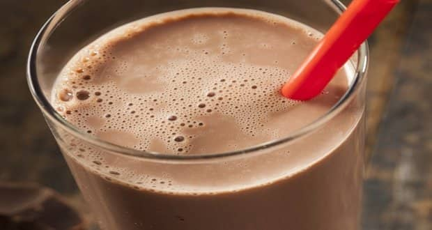

CHOCOLATE MILK

INGREDIENTS
- 2 tablespoons cocoa powder
- 2 tablespoons sugar (adjust to taste)
- 1 cup milk
- 1/2 teaspoon vanilla extract
HOW TO MAKE THIS YUMMY YUMMY CHOCOLATE MILK
- In a small bowl, combine the cocoa powder and sugar. Mix well to remove any lumps.
- Add a splash of milk to the cocoa powder mixture. Stir until it forms a smooth paste.
- Heat the remaining milk in a saucepan over medium heat until warm but not boiling.
- Slowly pour the warm milk into the cocoa paste while stirring continuously. This helps to dissolve the cocoa powder mixture.
- Add the vanilla extract to the chocolate milk and stir well to combine.
- Taste the chocolate milk and adjust the sweetness by adding more sugar if desired.
- Pour the chocolate milk into a glass and serve it chilled or with ice cubes, if desired.